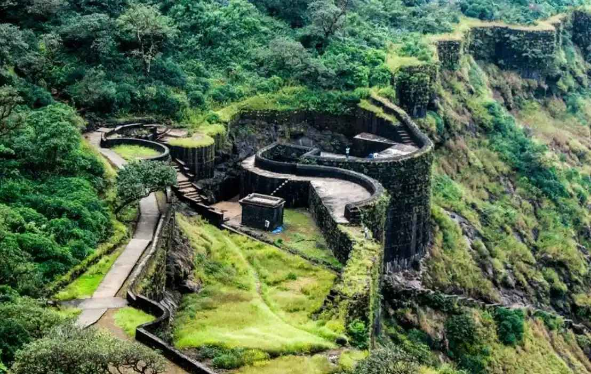
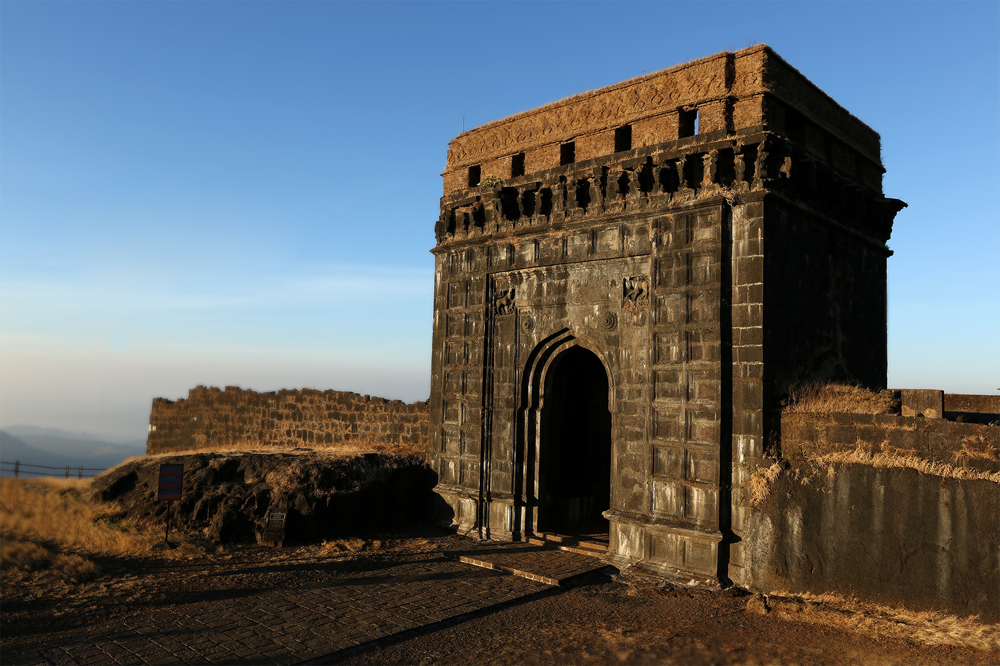
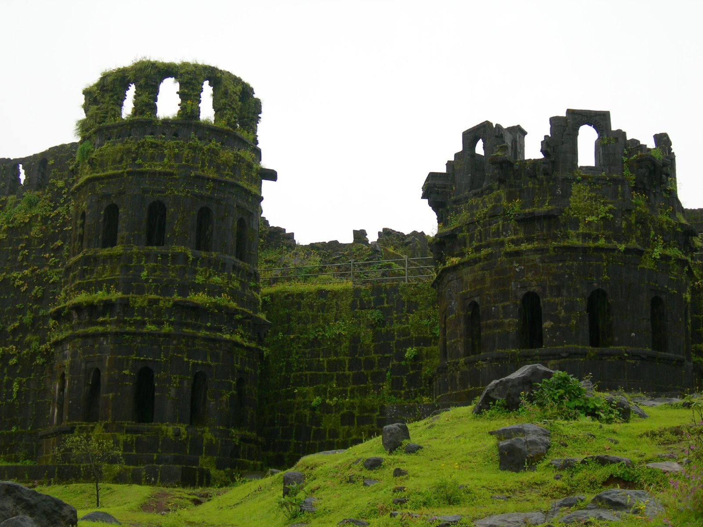
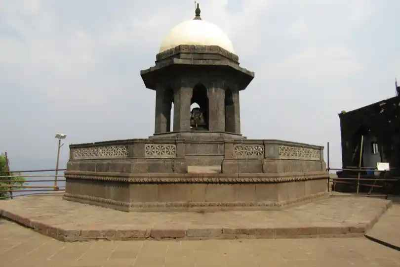

Raigad Fort Architecture

Raigad Fort was the capital of the Maratha Empire from 1674 to 1818. It is located on a hilltop in the
Sahyadri Mountains and is considered to be one of the most important forts in Indian history. The fort
is well-preserved and offers stunning views of the surrounding countryside.
Raigad Fort*, also known as Rairi or Rairy Fort, is a magnificent hill fort situated in the Sahyadri
mountain range, overlooking the town of Mahad in the Raigad district of Maharashtra, India. Standing
tall at an elevation of 2,700 feet (820 meters) above its base and 4,449 feet (1,356 meters) above sea
level, Raigad Fort offers breathtaking panoramic views of the surrounding landscape. Its strategic
location and formidable defenses made it one of the strongest fortresses on the Deccan Plateau.
Historical Significance
Raigad Fort holds immense historical significance as it served as the capital of the Maratha Empire under
the legendary Chhatrapati Shivaji Maharaj. In 1674, Shivaji was crowned the king of the Maratha kingdom,
and Raigad Fort became the center of his administrative and military operations. During his reign, the
Maratha Empire flourished and expanded considerably, reaching a significant portion of western and
central India.
Raigad Fort, situated approximately 25 kilometers away from Mahad, holds great significance as one of
Maharashtra’s most notable forts. Its association with Chhatrapati Shivaji Maharaj adds to its
historical importance. During the year 1674 AD, Shivaji Maharaj undertook the task of renovating the
fort and declared it the capital of his empire, marking a significant milestone in Maratha history. The
fort, positioned atop a hill, provides visitors with a breathtaking panoramic view of the surrounding
area, including the picturesque Ganga Sagar Lake. To ensure easy accessibility, the fort offers a unique
ropeway facility, enabling swift transportation to its summit.
The Murud-Janjira Fort stands as a prominent marine fortress situated along the Arabian Sea, near the
port town of Murud. Renowned for its robust defenses, it is often regarded as one of the most formidable
sea forts in India. Accessible by sailboats from the Rajapuri jetty, the fort boasts two main gates: one
facing the Rajapuri shore and the other, a postern gate, opening towards the sea to facilitate escape.
The fort’s bastions are fortified with an array of cannons, encompassing both indigenous and
European-made artillery.
Kolaba Fort, situated close to Alibag, served as a prominent naval outpost for the Maratha Empire and
played a crucial role in maritime operations. This fort boasted two main entrances: one facing the sea
and the other leading to the town of Alibag. Of particular interest are the freshwater wells within
Kolaba Fort, a rare feature for a fort situated by the seaside.
Sudhagad Fort, also known as Bhorapgad Fort, is located approximately 50 kilometers to the west of Pune
and 25 kilometers to the south of Lonavla. Situated in the Raigad District, near the town of Pali, this
fort has a rich history. Initially named Bhorapgad, it was later renamed Sudhagad by Shivaji Maharaj.
The fort’s plateau is divided into three distinct sections.
Accessing Raigad Fort
Reaching Raigad Fort requires a bit of effort, but the rewards are well worth the climb. Visitors can choose to ascend approximately 1,737 steps, offering a scenic and invigorating experience. Alternatively, a convenient option is the Raigad Ropeway, an aerial tramway spanning 2,460 feet (750 meters) in length, transporting visitors to the fort in just four minutes.
Beaches
Alibag Beach:
The primary beach at Alibag is characterized by a wide expanse of flat land, perfect for taking long
walks. It is relatively clean and usually not overcrowded during weekdays. The sand on this beach has a
hard texture and is black in color, which makes it challenging to build sand castles. Additionally, the
tide comes in from all directions, so be prepared to wade through water when returning.
Mandawa Beach:
Located approximately 10-15 miles north of Alibag on the north coast, Mandawa Beach is easily accessible
from Mumbai. This pristine beach offers a stunning view across the bay, all the way up to the famous
Gateway of India, especially on clear days. Mandawa village itself has a unique charm, with its
picturesque coconut palm groves adding to its allure.
Kihim Beach:
It is a hidden gem known for its lush woods teeming with colorful wildflowers, rare butterflies, and
various bird species. For history enthusiasts, the town of Chaul, situated 15 kilometers from Alibag, is
worth a visit. Chaul boasts Portuguese ruins, Buddhist caves, the Hamam Khana, a church, a temple, and
even a synagogue.
Visiting Hours



Raigad Fort remains open for visitors from 9:00 AM to 5:00 PM throughout the year. The best time to visit is during the cooler months, from October to March, when the weather is pleasant and the views are particularly stunning.